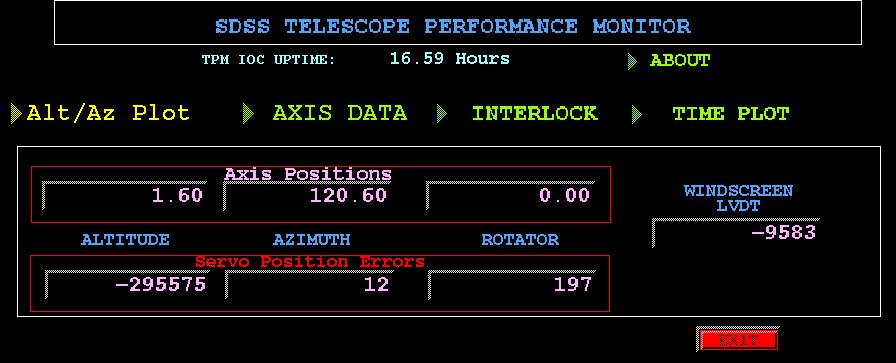
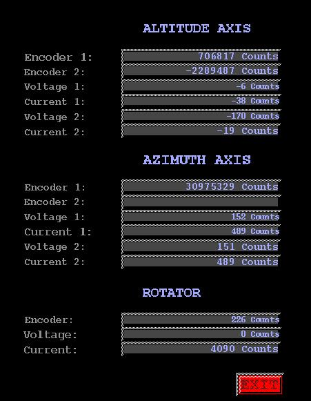
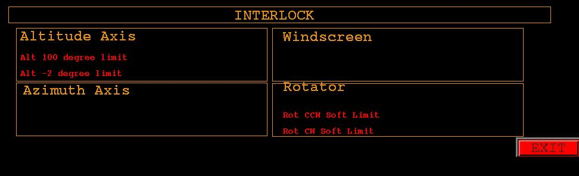
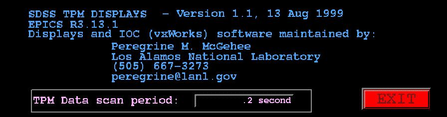
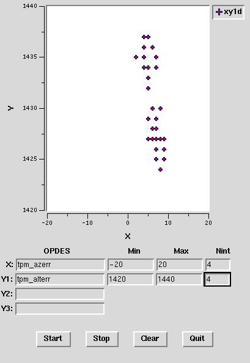
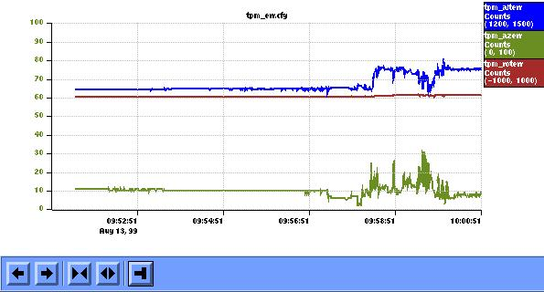
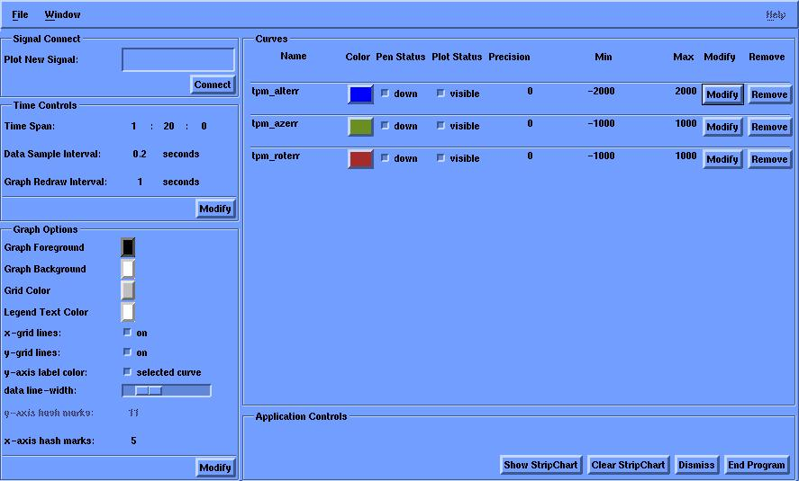

Telescope Performance Monitor Real-Time Displays
Peregrine M. McGehee
Los Alamos National Laboratory
Last Revision: 24 January 2000
1. Introduction
1.1 EPICS Overview
This document describes the Experimental Physics and Industrial Control
System (EPICS) real-time database that is resident on the SDSS Telescope
Performance Monitor VxWorks-based input/output Controller (IOC) and associated
operator displays. This software is developed and maintained by Peregrine
M. McGehee at Los Alamos National Laboratory who may be contacted by phone
at (505) 667-3273, or via e-mail at peregrine@lanl.gov (or peregrin@sdsshost.apo.nmsu.edu
on-site).
EPICS is a set of software tools and applications jointly developed
by Argonne National Laboratory and Los Alamos National Laboratory for the
purpose of controlling Particle Accelerators and Large Experiments. Present
and future development is being done cooperatively by Argonne (ANL), Los
Alamos National Laboratory (LANL), Lawrence Berkeley Laboratory (LBL),
the Jefferson National Laboratory (TJNAF), the Spallation Neutron Source
Collaboration, BESSY (Berliner Elektronenspeicherring-Gesellschaft
Fr Synchrotronstrahlung m.b.H.) and DESY (Deutsches Elektronen-Synchrotron).
EPICS provides:
Interfaces to instrumentation from data acquisition,
supervisory control, and steady state control through a table entry database.
Operator interface to all control system parameters
through interactive displays.
Data logging through a table entry archiving file.
Alarm management through a table entry alarm file.
Sequential control through a state definition
language with convenient database interface routines.
Channel access routines for interfacing the control
system data to data analysis, third party software packages, adaptive control
algorithms and any other functions not provided in the control system.
The basic components needed are the Operator Interface (OPI), Input Output
Controller (IOC), and a Local Area Network (LAN) which allows the OPI and
IOC to communicate. For detailed information about the EPICS toolkit and
the channel access protocol please refer to the EPICS homepage at Los Alamos
National Laboratory:http://epics.aps.anl.gov/epics/.
1.2 Access to Operator Displays on sdsshost
Preliminary real-time displays of SDSS engineering data can be run by entering
at the UNIX command line on sdsshost:
% /usrdevel/peregrin/tpmrt/bin/iris/rt
Please explore and send me back your comments and suggestions. I need
to find out from all of you what type of displays and what information
would be most useful to you.
The data that is available is scanned at 5 Hz rate from the TPM computer
and shows information that the MCP writes into shared memory. So any information
that is in the shared memory I can have served across the network for you
to examine.
1.3 Implementation Note
A word on the implementation. The EPICS control system toolkit creates
a list of named process variables that clients can connect to over the
local network. Any of these displays can be created by staff with knowledge
of the specific tools used to build them since it is knowledge of the process
variable names that define the interface with the user. At Los Alamos,
many of the operations displays in use are created not by the controls
staff but by the operators and accelerator physicists.
For example, to find the name of process variable that is connected
to a display widget on the edd/dm screens click on that widget using the
middle mouse button. The resultant pop-up display shows the name of the
control system process variable. This name can then be typed or pasted
with the middle mouse button into the StripTool or Tcl/Tk xyplot tools.
-
Figure 1. Example of edd/dm Channel Name Pop-up Display
1.4 User Environment Requirements
If you wish to bring up the EPICS operator tools separately, not via the
rt
script, a number of environmental variables must be first set in the
user's shell.
The execution path must include:
-
/usrdevel/peregrin/epics/extensions/bin/sgi
for the EPICS operator applications or extensions including edd/dm,
StripTool, and the EPICS-specific et_wish that combines Tcl, Tk, BLT, Tcl-dp,
and channel access client library..
And the standard Tcl/Tk libraries must be defined:
-
TCL_LIBRARY = /p/tcl/v7_4d/lib/tcl7.4
-
TK_LIBRARY = /p/tk/v4_0d/lib/tk4.0
-
DP_LIBRARY = /p/tcldp/v3_2f3/lib/dp
1.5 Locations
1.5.1 EPICS
The EPICS distribution is installed under sdsshost:/usrdevel/peregrin/epics,
hereafter referred to as $EPICS.
$EPICS/base contains the core of the EPICS system, including
channel access communications, the tools to create and manage the real-time
database, and the standard database recordtypes and device drivers used
by the collaboration. EPICS at APO is built using the SGI as a host and
the MV162 as the target.
$EPICS/extensions contains a small number of the numerous
add-ons to EPICS as contributed by the many sites. This includes all of
the operator display tools.
1.5.2 TPM application
The real-time TPM system is under sdsshost:/usrdevel/peregrin/tpm/tpmApp
and contains the EPICS database, custom C source code, operator displays,
and configuration files.
2. EPICS Operator Tools
Three different tools are in use.
-
The main screens are implemented using the EPICS edd/dm display builder
developed at LANL.
-
The XY plots are created using a Tcl/Tk program created at LANL using an
EPICS interface developed at ANL.
-
The Stripcharts make use of the EPICS StripTool program developed at TJNAF.
Additional user interface displays can be created quickly using the EPICS
edd/dm display manager program. The complete user's guide to edd/dm is
available on-line at http://lansce.lanl.gov/organization/EPICSdata/OPI/opintro-1.html.
Descriptions of the XY plot tool and of the StripTool are given below.
Additional operations and analysis utilities can be constructed using
existing channel access client interfaces to IDL, Mathematica, Java, SDDS,
and other software systems.
2.1 TPM edd/dm Displays
2.1.1 Main TPM Display
The main TPM edd/dm display, tpm.dl, provides a summary of
the three axis positions in degrees and their position errors in encoder
counts.
The row of four pull-down menus, from left to right, bring up:
-
Tcl/Tk XY Plots
-
User configurable XY Plot
-
Altitude versus Azimuth
-
Rotator versus Azimuth
-
Axis Data
-
Encoder, Current, and Voltage data on the three axes
-
Interlock
-
List of active interlocks
-
Time Plot
-
User configurable stripchart
-
Position errors stripchart
-
Rotator data stripchart
-
Altitude data stripchart
-
Azimuth data stripchart
The "About" pull-down
system.
Figure 2. Main TPM edd/dm Display

2.1.2 TPM Axis Data Display
This display provides text update fields of the encoder, current, and voltage
readbacks from the altitude, azimuth, and rotator axes.
-
Figure 3. TPM Axis Data edd/dm Display

2.1.3 TPM Interlock Display
The Interlock display is meant to show the axis interlocks that are currently
activated. This is implemented using edd/dm's ability to control widget
visibility based on the value of a control system process variable.
-
Figure 4. TPM Interlock edd/dm Display

2.1.4 TPM "About" Display
The "About" display's purpose is to provide software version and developer
contact information.
-
Figure 5. TPM "About" edd/dm Display

2.2 Tcl/Tk-based XY Plots
This simple utility allows the creation of real-time XY plots of upto three
variables against a single variable on the same axis. The variables are
EPICS process variables whose names are listed in section 3. of this document.
The values of the named process variables are fetched every 0.5 seconds.
Changing the format of the axes (Min, Max, Nint) does not cause data to
be lost.
The operator input fields are:
-
OPDES - this is the process variable
-
Min - Minimum value for the X (or Y axis)
-
Max - Maximum value for the X (or Y axis)
-
Nint - Number of labeled intervals on the axis. There is a tick mark between
every pair of labels.
The operator controls from left to right are:
-
Start - Start data acquisition and plotting loop
-
Stop - Stop data acquisition and plotting loop
-
Clear - Erase graph and stop
-
Quit - Exit Program
-
Figure 6. Sample XYPlot Tcl/Tk Display

2.3 StripTool
2.3.1 Program Initialization
The EPICS StripTool can be started either from the main TPM edd/dm screen
or directly from the UNIX shell. The invocation syntax is:
% StripTool <optional config file name>
The configuration files presently resident in sdsshost:/usrdevel/peregrin/tpm/tpmApp/opi
are:
-
tpm_alt.cfg - Altitude axis data
-
tpm_az.cfg - Azimuth axis data
-
tpm_err.cfg - Altitude, Azimuth, and Rotator position errors
-
tpm_rot.cfg - Rotator data
-
tpm_ws.cfg - Windscreen LVDT
2.3.2 Example StripTool display
The following figure shows a StripTool chart display. The operator control
features are:
-
The names of the EPICS process variables being plotted are shown in the
column on the right-hand side. These names are enclosed in boxes that indicate
the data color. Other information listed are the units and the display
min and max for that channel. Clicking on that box changes the vertical
axis on the left-hand side to reflect those limits.
-
The buttons along bottom of the display have the following functions (given
from left to right): Pan Left, Pan Right, Zoom In, Zoom Out, and Auto Scroll.
-
The control menu can be accessed by clicking and holding down the right
mouse button on the main part of the display. The options in this menu
are:
-
Controls Dialog - see below.
-
Toggle Scroll Buttons - on and off.
-
Print - defaults to the printer hdraper at APO.
-
Snapshot - screen capture.
-
Dump - to an ASCII file.
-
Dismiss - close display.
-
Quit - exit program.
Figure 7. Example StripTool Chart

2.3.3 StripTool Controls Dialog
The Controls Dialog for the StripTool utility is divided into the following
five regions:
-
Signal Connect
-
Time Controls
-
Graph Options
-
Curves
-
Application Controls
In addition, the File pull-down menu allows you to save the present configuration
as a named file, or to load an existing configuration file.
2.3.3.1 Signal Connect
The name of an EPICS process variable is typed or pasted into the text
entry box and the Connect button is pushed. If the process variable can
be located, a row is added in the Curves section.
2.3.3.2 Time Controls
The user can modify the data sample interval and the redraw interval. The
practical limits to these are based on the workstation and network performance
since the shorter intervals pose more of a load on the system performance.
2.3.3.3 Graph Options
These allow the user to alter the color and general appearance of the stripcharts.
2.3.3.4 Curves
Here you may change the display limits of each channel and to remove them
from the stripchart.
2.3.3.5 Application Control
The control buttons from left to right allow the user to:
-
Show stripchart
-
Clear the stripchart - removes all process variables
-
Dismiss the controls dialog window
-
End program
-
Figure 8. Example StripTool Dialog Window

3. Real-Time EPICS Database
3.1 Database Descriptions
Each record in the real-time EPICS database is described by a number of
fields (see the EPICS
Record Reference Manual). For the purpose of this document we will
list the following set of attributes:
Name - the location of the record in the EPICS global namesake implemented
on the local SDSS Internet. This is the string that clients across the
network use to access this record. The name is what can be used by any
operator tool including the display manager, Strip Tool, and Tcl/Tk applications.
Description - the information contained in the record.
Type - the nature of the database record.
Units - the units that the record value is in.
Scan Rate - the frequency at which the record is updated.
3.2 Shared Memory Access
The EPICS database on the TPM primarily serves data that is written by
the SDDS Mount Control Processor (MCP) across a shared memory interface.
3.2.1 Data Transfer
The tpm_getdata subroutine record is the first to be processed as part
of the Hz scanning. It's purpose to to copy data from the MCP-TPM shared
memory into a number of global vxWorks variables. These variables are then
tied to EPICS database records using the "vxWorks Variable" or symbolic
device support.
| Name |
Description |
Type |
Units |
Scan Rate |
| tpm_getdata |
Load Data Into Global Variables |
General Subroutine |
None |
5 Hz |
3.2.2 Altitude Axis
| Name |
Description |
Type |
Units |
Scan Rate |
| tpm_ALCPOS |
Altitude Position Command |
LongIn |
Encoder counts |
5 Hz |
| tpm_ALCVOLT |
Altitude Voltage Command |
LongIn |
ADC counts |
5 Hz |
| tpm_ALENC1 |
First Altitude Encoder |
LongIn |
Encoder counts |
5 Hz |
| tpm_ALENC2 |
Secon
| LongIn |
Encoder counts |
5 Hz |
| tpm_ALMTRV1 |
Altitude First Motor Voltage |
LongIn |
ADC counts |
5 Hz |
| tpm_ALMTRV2 |
Altitude Second Motor Voltage |
LongIn |
ADC counts |
5 Hz |
| tpm_ALMTRC1 |
Altitude First Motor Current |
LongIn |
ADC counts |
5 Hz |
| tpm_ALMTRC2 |
Altitude Second Motor Current |
LongIn |
ADC counts |
5 Hz |
3.2.3 Azimuth Axis
| Name |
Description |
Type |
Units |
Scan Rate |
| tpm_AZCPOS |
Azimuth Position Command |
LongIn |
Encoder counts |
5 Hz |
| tpm_AZCVOLT |
Azimuth Voltage Command |
LongIn |
DAC counts |
5 Hz |
| tpm_AZENC1 |
First Azimuth Encoder |
LongIn |
Encoder counts |
5 Hz |
| tpm_AZENC2 |
Second Azimuth Encoder |
LongIn |
Encoder counts |
5 Hz |
| tpm_AZMTRV1 |
Azimuth First Motor Voltage |
LongIn |
ADC counts |
5 Hz |
| tpm_AZMTRV2 |
Azimuth Second Motor Voltage |
LongIn |
ADC counts |
5 Hz |
| tpm_AZMTRC1 |
Azimuth First Motor Current |
LongIn |
ADC counts |
5 Hz |
| tpm_AZMTRC2 |
Azimuth Second Motor Current |
LongIn |
ADC counts |
5 Hz |
3.2.4 Instrument Rotator
| Name |
Description |
Type |
Units |
Scan Rate |
| tpm_ROCPOS |
Rotator Position Command |
LongIn |
Encoder counts |
5 Hz |
| tpm_ROCVOLT |
Rotator Voltage Command |
LongIn |
DAC counts |
5 Hz |
| tpm_ROCENC |
Rotator Encoder |
LongIn |
Encoder counts |
5 Hz |
| tpm_ROMTRV |
Rotator Motor Voltage |
LongIn |
ADC counts |
5 Hz |
| tpm_ROMTRC |
Rotator Motor Current |
LongIn |
ADC counts |
5 Hz |
3.2.5 Windscreen
| Name |
Description |
Type |
Units |
Scan Rate |
| tpm_ALWSPOS |
Altitude/Windscreen LVDT |
LongIn |
Encoder counts |
5 Hz |
3.2.6 Interlocks
| Name |
Description |
Type |
Units |
Scan Rate |
| tpm_ALLWC |
Alitude/Windscreen Lower Collision |
BinaryIn |
Triggered=1/OK=0 |
5 Hz |
| tpm_ALP100 |
Altitude 100 Degree Limit |
BinaryIn |
Triggered=1/OK=0 |
5 Hz |
| tpm_ALP20 |
Altitude 20 Degree Limit |
BinaryIn |
Triggered=1/OK=0 |
5 Hz |
| tpm_ALP_2 |
Altitude -2 Degree Limit |
BinaryIn |
Triggered=1/OK=0 |
5 Hz |
| tpm_ALRWC |
Altitude/Wind Screen Raise Collision |
BinaryIn |
Triggered=1/OK=0 |
5 Hz |
| tpm_ALSTOW |
Altitude Stow Position |
BinaryIn |
Triggered=1/OK=0 |
5 Hz |
| tpm_AZCCWC |
Azimuth/Windscreen CCW Limit |
BinaryIn |
Triggered=1/OK=0 |
5 Hz |
| tpm_AZCCWHL |
Azimuth/Windscreen CCW Hard Limit |
BinaryIn |
Triggered=1/OK=0 |
5 Hz |
| tpm_AZCCWSL |
Azimuth/Windscreen CCW Soft Limit |
BinaryIn |
Triggered=1/OK=0 |
5 Hz |
| tpm_AZCWC |
Azimuth/Windscreen CW Limit |
BinaryIn |
Triggered=1/OK=0 |
5 Hz |
| tpm_AZCWHL |
Azimuth/Windscreen CW Hard Limit |
BinaryIn |
Triggered=1/OK=0 |
5 Hz |
| tpm_AZCWSL |
Azimuth/Windscreen CW Soft Limit |
BinaryIn |
Triggered=1/OK=0 |
5 Hz |
| tpm_ROCCWHL |
Rotator CCW Hard Limit |
BinaryIn |
Triggered=1/OK=0 |
5 Hz |
| tpm_ROCCWSL |
Rotator CCW Soft Limit |
BinaryIn |
Triggered=1/OK=0 |
5 Hz |
| tpm_ROCWHL |
Rotator CW Hard Limit |
BinaryIn |
Triggered=1/OK=0 |
5 Hz |
| tpm_ROCWSL |
Rotator CW Soft Limit |
BinaryIn |
Triggered=1/OK=0 |
5 Hz |
| tpm_ROICHG |
Rotator at Instrument Change |
BinaryIn |
Triggered=1/OK=0 |
5 Hz |
3.3 Derived Quantities
The raw data obtained from the shared memory interface can be transformed
into other forms by use of EPICS Calculation records. For each axis we
scale the encoder readings into degrees on the sky and compute the differences
between the axis encoder and commanded positions.
| Name |
Description |
Type |
Units |
Scan Rate |
| tpm_altitude |
Altitude Position |
Calculation |
Degrees |
5 Hz |
| tpm_azimuth |
Azimuth Position |
Calculation |
Degrees |
5 Hz |
| tpm_rotator |
Rotator Position |
Calculation |
Degrees |
5 Hz |
| tpm_alterr |
Altitude Servo Error |
Calculation |
Encoder Counts |
5 Hz |
| tpm_azerr |
Azimuth Servo Error |
Calculation |
Encoder Counts |
5 Hz |
| tpm_roterr |
Rotator Servo Error |
Calculation |
Encoder Counts |
5 Hz |
3.4 Other
For informational purposes we compute the time since last reboot of the
TPM IOC. This is available from the system as clock ticks and we use a
Calculation record to translate that into hours.
| Name |
Description |
Type |
Units |
Scan Rate |
| tpm_uptime |
TPM IOC up-time |
Calculation |
Hours |
0.1 Hz |
| tpm_vxTicks |
vxWorks clock ticks |
LongIn |
Ticks |
Passive |